Chapter 2: How We See the Invisible World¶
Introduction¶
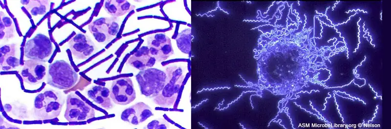
When we look at a rainbow, its colors span the full spectrum of light that the human eye can detect and differentiate. Each hue represents a different frequency of visible light, processed by our eyes and brains and rendered as red, orange, yellow, green, or one of the many other familiar colors that have always been a part of the human experience. But only recently have humans developed an understanding of the properties of light that allow us to see images in color.
Over the past several centuries, we have learned to manipulate light to peer into previously invisible worlds–those too small or too far away to be seen by the naked eye. Through a microscope, we can examine microbial cells, using various techniques to manipulate color, size, and contrast in ways that help us identify species and diagnose disease.
Figure 2.1 illustrates how we can apply the properties of light to visualize and magnify images; but these stunning micrographs are just two examples of the numerous types of images we are now able to produce with different microscopic technologies. This chapter explores how various types of microscopes manipulate light in order to provide a window into the world of microorganisms. By understanding how various kinds of microscopes work, we can produce highly detailed images of microbes that can be useful for both research and clinical applications.
2.1 The Properties of Light¶
Learning Objectives
By the end of this section, you will be able to:
- Identify and define the characteristics of electromagnetic radiation (EMR) used in microscopy
- Explain how lenses are used in microscopy to manipulate visible and ultraviolet (UV) light
Clinical Focus: Part 1
Cindy, a 17-year-old counselor at a summer sports camp, scraped her knee playing basketball 2 weeks ago. At the time, she thought it was only a minor abrasion that would heal, like many others before it. Instead, the wound began to look like an insect bite and has continued to become increasingly painful and swollen.
The camp nurse examines the lesion and observes a large amount of pus oozing from the surface. Concerned that Cindy may have developed a potentially aggressive infection, she swabs the wound to collect a sample from the infection site. Then she cleans out the pus and dresses the wound, instructing Cindy to keep the area clean and to come back the next day. When Cindy leaves, the nurse sends the sample to the closest medical lab to be analyzed under a microscope.
- What are some things we can learn about these bacteria by looking at them under a microscope?
Jump to the next Clinical Focus box.
Visible light consists of electromagnetic waves that behave like other waves. Hence, many of the properties of light that are relevant to microscopy can be understood in terms of light’s behavior as a wave. An important property of light waves is the wavelength, or the distance between one peak of a wave and the next peak. The height of each peak (or depth of each trough) is called the amplitude. In contrast, the frequency of the wave is the rate of vibration of the wave, or the number of wavelengths within a specified time period (Figure 2.2).
![Figure a shows a wavy line with evenly repeating waves upwards and downwards. A straight line through the center of the wavy line indicates the base of the waves. The distance from the peak of one wave to another is the wavelength. The distance from the baseline to the peak of a wave or the distance from the baseline to the trough of a wave is called the amplitude. Figure b shows three waves with unit time labeled across the bottom. The top line has waves that are widely spread apart. Waves with a wide wavelength have a low frequency. The bottom line has waves that are close together. Waves with a narrow wavelength have a high frequency. The middle line has a medium wavelength and therefore a medium frequency.](img/osc-microbio-02-01-freqwave.webp)
Interactions of Light¶
Light waves interact with materials by being reflected, absorbed, or transmitted. Reflection occurs when a wave bounces off of a material. For example, a red piece of cloth may reflect red light to our eyes while absorbing other colors of light. Absorbance occurs when a material captures the energy of a light wave. In the case of glow-in-the-dark plastics, the energy from light can be absorbed and then later re-emitted as another form of phosphorescence. Transmission occurs when a wave travels through a material, like light through glass (the process of transmission is called transmittance). When a material allows a large proportion of light to be transmitted, it may do so because it is thinner, or more transparent (having more transparency and less opacity). Figure 2.3 illustrates the difference between transparency and opacity.
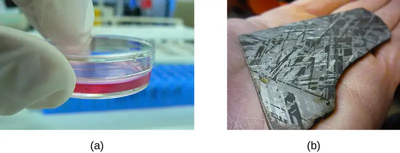
Light waves can also interact with each other by interference, creating complex patterns of motion. Dropping two pebbles into a puddle causes the waves on the puddle’s surface to interact, creating complex interference patterns. Light waves can interact in the same way.
In addition to interfering with each other, light waves can also interact with small objects or openings by bending or scattering. This is called diffraction. Diffraction is larger when the object is smaller relative to the wavelength of the light (the distance between two consecutive peaks of a light wave). Often, when waves diffract in different directions around an obstacle or opening, they will interfere with each other.
Check Your Understanding
- If a light wave has a long wavelength, is it likely to have a low or high frequency?
- If an object is transparent, does it reflect, absorb, or transmit light?
Lenses and Refraction¶
In the context of microscopy, refraction is perhaps the most important behavior exhibited by light waves. Refraction occurs when light waves change direction as they enter a new medium (Figure 2.4). Different transparent materials transmit light at different speeds; thus, light can change speed when passing from one material to another. This change in speed usually also causes a change in direction (refraction), with the degree of change dependent on the angle of the incoming light.
![Picture a shows a light beam aimed at a piece of glass. When the light beam hits the transparent glass material it bends by approximately 45°. This bent light ray is the refracted ray. The opaque material which the glass is sitting upon does not have any light shining through it. Diagram b shows an arrow labeled incident ray pointing at a 45° angle down towards a shaded region. At the point where the incident ray reaches the shaded region, two other arrows begin. One of these arrows points at a 90° angle from the incident ray (and away from the shaded region) and is the reflected ray. The second arrow continues through the shaded region but at a slightly bent angle from the incident ray. This second arrow is the reflected ray.](img/osc-microbio-02-01-refraction.webp)
The extent to which a material slows transmission speed relative to empty space is called the refractive index of that material. Large differences between the refractive indices of two materials will result in a large amount of refraction when light passes from one material to the other. For example, light moves much more slowly through water than through air, so light entering water from air can change direction greatly. We say that the water has a higher refractive index than air (Figure 2.5).
When light crosses a boundary into a material with a higher refractive index, its direction turns to be closer to perpendicular to the boundary (i.e., more toward a normal to that boundary; see Figure 2.5). This is the principle behind lenses. We can think of a lens as an object with a curved boundary (or a collection of prisms) that collects all of the light that strikes it and refracts it so that it all meets at a single point called the image point (focus). A convex lens can be used to magnify because it can focus at closer range than the human eye, producing a larger image. Concave lenses and mirrors can also be used in microscopes to redirect the light path. Figure 2.6 shows the focal point (the image point when light entering the lens is parallel) and the focal length (the distance to the focal point) for convex and concave lenses.
![Diagram a (prism) shows a clear pyramid with light entering one surface. The light leaving the other surface is bent and is the refracted light. A dotted line indicates the path the original light beam would have taken had it not bent. The region above the dotted line is labeled high refractive index; the region below the line is labeled low refractive index. Diagram b (convex lens) shows a lens with a bulge in the center. Light enters one either side of the dome and is focused to a point past the lens and in line with the center of the dome. The point at which the light focuses is the focal point; the distance from the focal point to the center of the lens is the focal length. Diagram c (concave lens) shows a lens that curves inward on either side. Light entering this lens is bent outwards, away from the center of the lens’s curve. A dotted line shows the linear path backwards for each of the bent light beams. The point at which all the dotted lines meet (which is on the other side of the lens) is the focal point.](img/osc-microbio-02-01-focal.webp)
The human eye contains a lens that enables us to see images. This lens focuses the light reflecting off of objects in front of the eye onto the surface of the retina, which is like a screen in the back of the eye. Artificial lenses placed in front of the eye (contact lenses, glasses, or microscopic lenses) focus light before it is focused (again) by the lens of the eye, manipulating the image that ends up on the retina (e.g., by making it appear larger).
Images are commonly manipulated by controlling the distances between the object, the lens, and the screen, as well as the curvature of the lens. For example, for a given amount of curvature, when an object is closer to the lens, the focal points are farther from the lens. As a result, it is often necessary to manipulate these distances to create a focused image on a screen. Similarly, more curvature creates image points closer to the lens and a larger image when the image is in focus. This property is often described in terms of the focal distance, or distance to the focal point.
Check Your Understanding
- Explain how a lens focuses light at the image point.
- Name some factors that affect the focal length of a lens.
Electromagnetic Spectrum and Color¶
Visible light is just one form of electromagnetic radiation (EMR), a type of energy that is all around us. Other forms of EMR include microwaves, X-rays, and radio waves, among others. The different types of EMR fall on the electromagnetic spectrum, which is defined in terms of wavelength and frequency. The spectrum of visible light occupies a relatively small range of frequencies between infrared and ultraviolet light (Figure 2.7).
![A series of scales indicate that the image shows the lowest wavelength (10 superscript -18 m) on the left and the highest wavelength (10 superscript 6 m) on the right. The frequencies range from over 10 superscript 24 Hzon the left to 1 Hz on the right. The energies range from 10 superscript 12 ev on the left to 10 superscript -12 on the right. The types of radiation listed above these scales (from left to right) is: cosmic radiation, gamma rays, X-rays, ultra-violet, visible, infrared, Terahertz radiation, radar, television and radion broadcasting, and AC circuits. The visible light portion of the spectrum is pulled out and shows blue light at 400 nm, green light at 500 nm, yellow light at 600 nm, and red light at 700 nm.](img/osc-microbio-02-01-emspectrum.webp)
Whereas wavelength represents the distance between adjacent peaks of a light wave, frequency, in a simplified definition, represents the rate of oscillation. Waves with higher frequencies have shorter wavelengths and, therefore, have more oscillations per unit time than lower-frequency waves. Higher-frequency waves also contain more energy than lower-frequency waves. This energy is delivered as elementary particles called photons. Higher-frequency waves deliver more energetic photons than lower-frequency waves.
Photons with different energies interact differently with the retina. In the spectrum of visible light, each color corresponds to a particular frequency and wavelength (Figure 2.7).The lowest frequency of visible light appears as the color red, whereas the highest appears as the color violet. When the retina receives visible light of many different frequencies, we perceive this as white light. However, white light can be separated into its component colors using refraction. If we pass white light through a prism, different colors will be refracted in different directions, creating a rainbow-like spectrum on a screen behind the prism. This separation of colors is called dispersion, and it occurs because, for a given material, the refractive index is different for different frequencies of light.
Certain materials can refract nonvisible forms of EMR and, in effect, transform them into visible light. Certain fluorescent dyes, for instance, absorb ultraviolet or blue light and then use the energy to emit photons of a different color, giving off light rather than simply vibrating. This occurs because the energy absorption causes electrons to jump to higher energy states, after which they then almost immediately fall back down to their ground states, emitting specific amounts of energy as photons. Not all of the energy is emitted in a given photon, so the emitted photons will be of lower energy and, thus, of lower frequency than the absorbed ones. Thus, a dye such as Texas red may be excited by blue light, but emit red light; or a dye such as fluorescein isothiocyanate (FITC) may absorb (invisible) high-energy ultraviolet light and emit green light (Figure 2.8). In some materials, the photons may be emitted following a delay after absorption; in this case, the process is called phosphorescence. Glow-in-the-dark plastic works by using phosphorescent material.
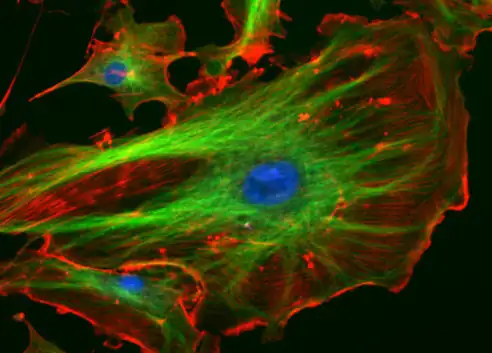
Check Your Understanding
- Which has a higher frequency: red light or green light?
- Explain why dispersion occurs when white light passes through a prism.
- Why do fluorescent dyes emit a different color of light than they absorb?
Magnification, Resolution, and Contrast¶
Microscopes magnify images and use the properties of light to create useful images of small objects. Magnification is defined as the ability of a lens to enlarge the image of an object when compared to the real object. For example, a magnification of 10⨯ means that the image appears 10 times the size of the object as viewed with the naked eye.
Greater magnification typically improves our ability to see details of small objects, but magnification alone is not sufficient to make the most useful images. It is often useful to enhance the resolution of objects: the ability to tell that two separate points or objects are separate. A low-resolution image appears fuzzy, whereas a high-resolution image appears sharp. Two factors affect resolution. The first is wavelength. Shorter wavelengths are able to resolve smaller objects; thus, an electron microscope has a much higher resolution than a light microscope, since it uses an electron beam with a very short wavelength, as opposed to the long-wavelength visible light used by a light microscope. The second factor that affects resolution is numerical aperture, which is a measure of a lens’s ability to gather light. The higher the numerical aperture, the better the resolution.
Link to Learning
Read this article to learn more about factors that can increase or decrease the numerical aperture of a lens.
Even when a microscope has high resolution, it can be difficult to distinguish small structures in many specimens because microorganisms are relatively transparent. It is often necessary to increase contrast to detect different structures in a specimen. Various types of microscopes use different features of light or electrons to increase contrast—visible differences between the parts of a specimen (see Instruments of Microscopy). Additionally, dyes that bind to some structures but not others can be used to improve the contrast between images of relatively transparent objects (see Staining Microscopic Specimens).
Check Your Understanding
- Explain the difference between magnification and resolution.
- Explain the difference between resolution and contrast.
- Name two factors that affect resolution.
2.2 Peering Into the Invisible World¶
Learning Objectives
By the end of this section, you will be able to:
- Describe historical developments and individual contributions that led to the invention and development of the microscope
- Compare and contrast the features of simple and compound microscopes
Some of the fundamental characteristics and functions of microscopes can be understood in the context of the history of their use. Italian scholar Girolamo Fracastoro is regarded as the first person to formally postulate that disease was spread by tiny invisible seminaria, or “seeds of the contagion.” In his book De Contagione (1546), he proposed that these seeds could attach themselves to certain objects (which he called fomes [cloth]) that supported their transfer from person to person. However, since the technology for seeing such tiny objects did not yet exist, the existence of the seminaria remained hypothetical for a little over a century—an invisible world waiting to be revealed.
Early Microscopes¶
Antonie van Leeuwenhoek, sometimes hailed as “the Father of Microbiology,” is typically credited as the first person to have created microscopes powerful enough to view microbes (Figure 2.9). Born in the city of Delft in the Dutch Republic, van Leeuwenhoek began his career selling fabrics. However, he later became interested in lens making (perhaps to look at threads) and his innovative techniques produced microscopes that allowed him to observe microorganisms as no one had before. In 1674, he described his observations of single-celled organisms, whose existence was previously unknown, in a series of letters to the Royal Society of London. His report was initially met with skepticism, but his claims were soon verified and he became something of a celebrity in the scientific community.
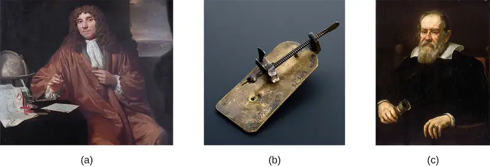
While van Leeuwenhoek is credited with the discovery of microorganisms, others before him had contributed to the development of the microscope. These included eyeglass makers in the Netherlands in the late 1500s, as well as the Italian astronomer Galileo Galilei, who used a compound microscope to examine insect parts (Figure 2.9). Whereas van Leeuwenhoek used a simple microscope, in which light is passed through just one lens, Galileo’s compound microscope was more sophisticated, passing light through two sets of lenses.
Van Leeuwenhoek’s contemporary, the Englishman Robert Hooke (1635–1703), also made important contributions to microscopy, publishing in his book Micrographia (1665) many observations using compound microscopes. Viewing a thin sample of cork through his microscope, he was the first to observe the structures that we now know as cells (Figure 2.10). Hooke described these structures as resembling “Honey-comb,” and as “small Boxes or Bladders of Air,” noting that each “Cavern, Bubble, or Cell” is distinct from the others (in Latin, “cell” literally means “small room”). They likely appeared to Hooke to be filled with air because the cork cells were dead, with only the rigid cell walls providing the structure.
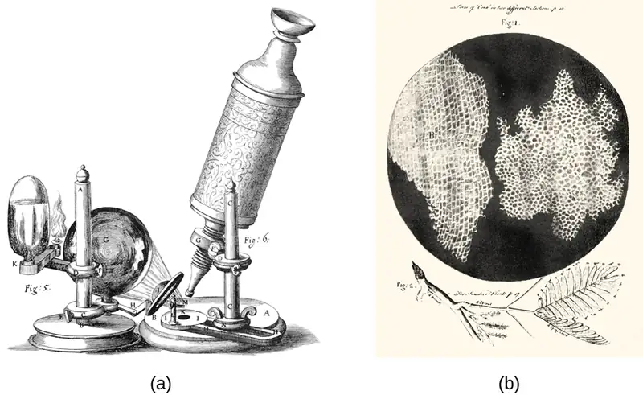
Check Your Understanding
- Explain the difference between simple and compound microscopes.
- Compare and contrast the contributions of van Leeuwenhoek, Hooke, and Galileo to early microscopy.
Micro Connections: Who Invented the Microscope?
While Antonie van Leeuwenhoek and Robert Hooke generally receive much of the credit for early advances in microscopy, neither can claim to be the inventor of the microscope. Some argue that this designation should belong to Hans and Zaccharias Janssen, Dutch spectacle-makers who may have invented the telescope, the simple microscope, and the compound microscope during the late 1500s or early 1600s (Figure 2.11). Unfortunately, little is known for sure about the Janssens, not even the exact dates of their births and deaths. The Janssens were secretive about their work and never published. It is also possible that the Janssens did not invent anything at all; their neighbor, Hans Lippershey, also developed microscopes and telescopes during the same time frame, and he is often credited with inventing the telescope. The historical records from the time are as fuzzy and imprecise as the images viewed through those early lenses, and any archived records have been lost over the centuries.
By contrast, van Leeuwenhoek and Hooke can thank ample documentation of their work for their respective legacies. Like Janssen, van Leeuwenhoek began his work in obscurity, leaving behind few records. However, his friend, the prominent physician Reinier de Graaf, wrote a letter to the editor of the Philosophical Transactions of the Royal Society of London calling attention to van Leeuwenhoek’s powerful microscopes. From 1673 onward, van Leeuwenhoek began regularly submitting letters to the Royal Society detailing his observations. In 1674, his report describing single-celled organisms produced controversy in the scientific community, but his observations were soon confirmed when the society sent a delegation to investigate his findings. He subsequently enjoyed considerable celebrity, at one point even entertaining a visit by the czar of Russia.
Similarly, Robert Hooke had his observations using microscopes published by the Royal Society in a book called Micrographia in 1665. The book became a bestseller and greatly increased interest in microscopy throughout much of Europe.
2.3 Instruments of Microscopy¶
Learning Objectives
By the end of this section, you will be able to:
- Identify and describe the parts of a brightfield microscope
- Calculate total magnification for a compound microscope
- Describe the distinguishing features and typical uses for various types of light microscopes, electron microscopes, and scanning probe microscopes
The early pioneers of microscopy opened a window into the invisible world of microorganisms. But microscopy continued to advance in the centuries that followed. In 1830, Joseph Jackson Lister created an essentially modern light microscope. The 20th century saw the development of microscopes that leveraged nonvisible light, such as fluorescence microscopy, which uses an ultraviolet light source, and electron microscopy, which uses short-wavelength electron beams. These advances led to major improvements in magnification, resolution, and contrast. By comparison, the relatively rudimentary microscopes of van Leeuwenhoek and his contemporaries were far less powerful than even the most basic microscopes in use today. In this section, we will survey the broad range of modern microscopic technology and common applications for each type of microscope.
Light Microscopy¶
Many types of microscopes fall under the category of light microscopes, which use light to visualize images. Examples of light microscopes include brightfield microscopes, darkfield microscopes, phase-contrast microscopes, differential interference contrast microscopes, fluorescence microscopes, confocal scanning laser microscopes, and two-photon microscopes. These various types of light microscopes can be used to complement each other in diagnostics and research.
Brightfield Microscopes¶
The brightfield microscope, perhaps the most commonly used type of microscope, is a compound microscope with two or more lenses that produce a dark image on a bright background. Some brightfield microscopes are monocular (having a single eyepiece), though most newer brightfield microscopes are binocular (having two eyepieces), like the one shown in Figure 2.12; in either case, each eyepiece contains a lens called an ocular lens. The ocular lenses typically magnify images 10 times (10⨯). At the other end of the body tube are a set of objective lenses on a rotating nosepiece. The magnification of these objective lenses typically ranges from 4⨯ to 100⨯, with the magnification for each lens designated on the metal casing of the lens. The ocular and objective lenses work together to create a magnified image. The total magnification is the product of the ocular magnification times the objective magnification:
For example, if a 40⨯ objective lens is selected and the ocular lens is 10⨯, the total magnification would be
![A photo of a microscope is shown. The base contains a light source (the illuminator, #7) and a knob to adjust light intensity (rheostat). Attached at one end of the base is an arm with a stage (#9) to hold the specimen projecting out halfway up the arm. The center of the stage has an opening to allow light from the illuminator through. Below this opening are the diaphragm and condenser (#8). Above this opening are four lenses (objective lenses, #3) on a revolving nose piece (#2) that holds the multiple objectives. Above the objective lenses are two eye pieces (#1) called the ocular lenses. Attached to the bottom of the stage are two knobs for moving the slide (x-y mechanical stage knobs). On the arm below the stage are 2 knobs for focusing the image. The larger knob (#4) is the coarse focus, and the smaller knob (#5) is the fine focus.](img/osc-microbio-02-03-brightfiel.webp)
The item being viewed is called a specimen. The specimen is placed on a glass slide, which is then clipped into place on the stage (a platform) of the microscope. Once the slide is secured, the specimen on the slide is positioned over the light using the x-y mechanical stage knobs. These knobs move the slide on the surface of the stage, but do not raise or lower the stage. Once the specimen is centered over the light, the stage position can be raised or lowered to focus the image. The coarse focusing knob is used for large-scale movements with 4⨯ and 10⨯ objective lenses; the fine focusing knob is used for small-scale movements, especially with 40⨯ or 100⨯ objective lenses.
When images are magnified, they become dimmer because there is less light per unit area of image. Highly magnified images produced by microscopes, therefore, require intense lighting. In a brightfield microscope, this light is provided by an illuminator, which is typically a high-intensity bulb below the stage. Light from the illuminator passes up through condenser lens (located below the stage), which focuses all of the light rays on the specimen to maximize illumination. The position of the condenser can be optimized using the attached condenser focus knob; once the optimal distance is established, the condenser should not be moved to adjust the brightness. If less-than-maximal light levels are needed, the amount of light striking the specimen can be easily adjusted by opening or closing a diaphragm between the condenser and the specimen. In some cases, brightness can also be adjusted using the rheostat, a dimmer switch that controls the intensity of the illuminator.
A brightfield microscope creates an image by directing light from the illuminator at the specimen; this light is differentially transmitted, absorbed, reflected, or refracted by different structures. Different colors can behave differently as they interact with chromophores (pigments that absorb and reflect particular wavelengths of light) in parts of the specimen. Often, chromophores are artificially added to the specimen using stains, which serve to increase contrast and resolution. In general, structures in the specimen will appear darker, to various extents, than the bright background, creating maximally sharp images at magnifications up to about 1000⨯. Further magnification would create a larger image, but without increased resolution. This allows us to see objects as small as bacteria, which are visible at about 400⨯ or so, but not smaller objects such as viruses.
At very high magnifications, resolution may be compromised when light passes through the small amount of air between the specimen and the lens. This is due to the large difference between the refractive indices of air and glass; the air scatters the light rays before they can be focused by the lens. To solve this problem, a drop of oil can be used to fill the space between the specimen and an oil immersion lens, a special lens designed to be used with immersion oils. Since the oil has a refractive index very similar to that of glass, it increases the maximum angle at which light leaving the specimen can strike the lens. This increases the light collected and, thus, the resolution of the image (Figure 2.13). A variety of oils can be used for different types of light.
![Photograph a shows a close-up of a lens from a brightfield microscope. The lens is nearly touching the slide below it and there is oil spanning the space between the lens and the slide. Diagram b light traveling from the light source through the microscope slide. Without oil, the light refracts as it passes through the glass. Many of these refracted light beams do not meet the lens of the microscope. With immersion oil, the light beams travel from the slide, through the immersion oil, to the microscope lens with minimal refraction.](img/osc-microbio-02-03-oillens.webp)
Micro Connections: Microscope Maintenance: Best Practices
Even a very powerful microscope cannot deliver high-resolution images if it is not properly cleaned and maintained. Since lenses are carefully designed and manufactured to refract light with a high degree of precision, even a slightly dirty or scratched lens will refract light in unintended ways, degrading the image of the specimen. In addition, microscopes are rather delicate instruments, and great care must be taken to avoid damaging parts and surfaces. Among other things, proper care of a microscope includes the following:
- cleaning the lenses with lens paper
- not allowing lenses to contact the slide (e.g., by rapidly changing the focus)
- protecting the bulb (if there is one) from breakage
- not pushing an objective into a slide
- not using the coarse focusing knob when using the 40⨯ or greater objective lenses
- only using immersion oil with a specialized oil objective, usually the 100⨯ objective
- cleaning oil from immersion lenses after using the microscope
- cleaning any oil accidentally transferred from other lenses
- covering the microscope or placing it in a cabinet when not in use
Link to Learning
Visit the online resource linked below for simulations and demonstrations involving the use of microscopes. Keep in mind that execution of specific techniques and procedures can vary depending on the specific instrument you are using. Thus, it is important to learn and practice with an actual microscope in a laboratory setting under expert supervision.
- University of Delaware’s Virtual Microscope
Darkfield Microscopy¶
A darkfield microscope is a brightfield microscope that has a small but significant modification to the condenser. A small, opaque disk (about 1 cm in diameter) is placed between the illuminator and the condenser lens. This opaque light stop, as the disk is called, blocks most of the light from the illuminator as it passes through the condenser on its way to the objective lens, producing a hollow cone of light that is focused on the specimen. The only light that reaches the objective is light that has been refracted or reflected by structures in the specimen. The resulting image typically shows bright objects on a dark background (Figure 2.14).
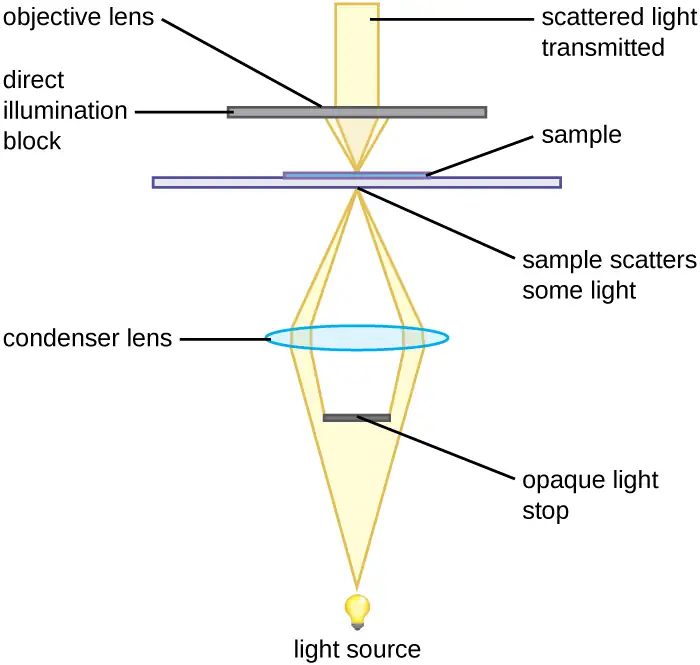
Darkfield microscopy can often create high-contrast, high-resolution images of specimens without the use of stains, which is particularly useful for viewing live specimens that might be killed or otherwise compromised by the stains. For example, thin spirochetes like Treponema pallidum, the causative agent of syphilis, can be best viewed using a darkfield microscope (Figure 2.15).
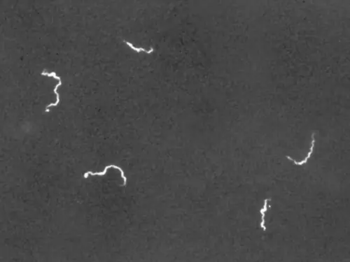
Check Your Understanding
- Identify the key differences between brightfield and darkfield microscopy.
Clinical Focus: Part 2
Wound infections like Cindy’s can be caused by many different types of bacteria, some of which can spread rapidly with serious complications. Identifying the specific cause is very important to select a medication that can kill or stop the growth of the bacteria.
After calling a local doctor about Cindy’s case, the camp nurse sends the sample from the wound to the closest medical laboratory. Unfortunately, since the camp is in a remote area, the nearest lab is small and poorly equipped. A more modern lab would likely use other methods to culture, grow, and identify the bacteria, but in this case, the technician decides to make a wet mount from the specimen and view it under a brightfield microscope. In a wet mount, a small drop of water is added to the slide, and a cover slip is placed over the specimen to keep it in place before it is positioned under the objective lens.
Under the brightfield microscope, the technician can barely see the bacteria cells because they are nearly transparent against the bright background. To increase contrast, the technician inserts an opaque light stop above the illuminator. The resulting darkfield image clearly shows that the bacteria cells are spherical and grouped in clusters, like grapes.
- Why is it important to identify the shape and growth patterns of cells in a specimen?
- What other types of microscopy could be used effectively to view this specimen?
Jump to the next Clinical Focus box. Go back to the previous Clinical Focus box.
Phase-Contrast Microscopes¶
Phase-contrast microscopes use refraction and interference caused by structures in a specimen to create high-contrast, high-resolution images without staining. It is the oldest and simplest type of microscope that creates an image by altering the wavelengths of light rays passing through the specimen. To create altered wavelength paths, an annular stop is used in the condenser. The annular stop produces a hollow cone of light that is focused on the specimen before reaching the objective lens. The objective contains a phase plate containing a phase ring. As a result, light traveling directly from the illuminator passes through the phase ring while light refracted or reflected by the specimen passes through the plate. This causes waves traveling through the ring to be about one-half of a wavelength out of phase with those passing through the plate. Because waves have peaks and troughs, they can add together (if in phase together) or cancel each other out (if out of phase). When the wavelengths are out of phase, wave troughs will cancel out wave peaks, which is called destructive interference. Structures that refract light then appear dark against a bright background of only unrefracted light. More generally, structures that differ in features such as refractive index will differ in levels of darkness (Figure 2.16).
![A diagram shows the path of light through a phase-contrast microscope. Light from the light source travels to the annular ring in the condenser which produces a cone of light focused on the specimen. The specimen refracts or reflects light. Light traveling directly from the condenser lens (undiffracted light) and light traveling through the specimen (diffracted light) are out of phase when they pass through the objective and phase plates. Wavelengths in phase or out of phase either add together or cancel out each other.](img/osc-microbio-02-03-phasecontr.webp)
Because it increases contrast without requiring stains, phase-contrast microscopy is often used to observe live specimens. Certain structures, such as organelles in eukaryotic cells and endospores in prokaryotic cells, are especially well visualized with phase-contrast microscopy (Figure 2.17).
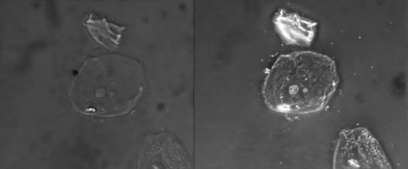
Differential Interference Contrast Microscopes¶
Differential interference contrast (DIC) microscopes (also known as Nomarski optics) are similar to phase-contrast microscopes in that they use interference patterns to enhance contrast between different features of a specimen. In a DIC microscope, two beams of light are created in which the direction of wave movement (polarization) differs. Once the beams pass through either the specimen or specimen-free space, they are recombined and effects of the specimens cause differences in the interference patterns generated by the combining of the beams. This results in high-contrast images of living organisms with a three-dimensional appearance. These microscopes are especially useful in distinguishing structures within live, unstained specimens. (Figure 2.18)
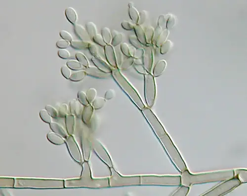
Check Your Understanding
- What are some advantages of phase-contrast and DIC microscopy?
Fluorescence Microscopes¶
A fluorescence microscope uses fluorescent chromophores called fluorochromes, which are capable of absorbing energy from a light source and then emitting this energy as visible light. Fluorochromes include naturally fluorescent substances (such as chlorophylls) as well as fluorescent stains that are added to the specimen to create contrast. Dyes such as Texas red and FITC are examples of fluorochromes. Other examples include the nucleic acid dyes 4’,6’-diamidino-2-phenylindole (DAPI) and acridine orange.
The microscope transmits an excitation light, generally a form of EMR with a short wavelength, such as ultraviolet or blue light, toward the specimen; the chromophores absorb the excitation light and emit visible light with longer wavelengths. The excitation light is then filtered out (in part because ultraviolet light is harmful to the eyes) so that only visible light passes through the ocular lens. This produces an image of the specimen in bright colors against a dark background.
Fluorescence microscopes are especially useful in clinical microbiology. They can be used to identify pathogens, to find particular species within an environment, or to find the locations of particular molecules and structures within a cell. Approaches have also been developed to distinguish living from dead cells using fluorescence microscopy based upon whether they take up particular fluorochromes. Sometimes, multiple fluorochromes are used on the same specimen to show different structures or features.
One of the most important applications of fluorescence microscopy is a technique called immunofluorescence, which is used to identify certain disease-causing microbes by observing whether antibodies bind to them. (Antibodies are protein molecules produced by the immune system that attach to specific pathogens to kill or inhibit them.) There are two approaches to this technique: direct immunofluorescence assay (DFA) and indirect immunofluorescence assay (IFA). In DFA, specific antibodies (e.g., those that the target the rabies virus) are stained with a fluorochrome. If the specimen contains the targeted pathogen, one can observe the antibodies binding to the pathogen under the fluorescent microscope. This is called a primary antibody stain because the stained antibodies attach directly to the pathogen.
In IFA, secondary antibodies are stained with a fluorochrome rather than primary antibodies. Secondary antibodies do not attach directly to the pathogen, but they do bind to primary antibodies. When the unstained primary antibodies bind to the pathogen, the fluorescent secondary antibodies can be observed binding to the primary antibodies. Thus, the secondary antibodies are attached indirectly to the pathogen. Since multiple secondary antibodies can often attach to a primary antibody, IFA increases the number of fluorescent antibodies attached to the specimen, making it easier to visualize features in the specimen (Figure 2.19).
![Micrograph a shows fluorescent green spheres on a black background. Micrograph b shows fluorescent worm shapes on a black background. Diagram c depicts the process of direct immunofluorescence. In direct immunofluorescence a fluorochrome is attached to a primary antibody and the primary antibody is attached to the antigen. In indirect immunofluorescence the fluorochrome is attached to a secondary antibody. The secondary antibody is attached to the primary antibody; and the primary antibody is attached to the antigen.](img/osc-microbio-02-03-directfl.webp)
Check Your Understanding
- Why must fluorochromes be used to examine a specimen under a fluorescence microscope?
Confocal Microscopes¶
Whereas other forms of light microscopy create an image that is maximally focused at a single distance from the observer (the depth, or z-plane), a confocal microscope uses a laser to scan multiple z-planes successively. This produces numerous two-dimensional, high-resolution images at various depths, which can be constructed into a three-dimensional image by a computer. As with fluorescence microscopes, fluorescent stains are generally used to increase contrast and resolution. Image clarity is further enhanced by a narrow aperture that eliminates any light that is not from the z-plane. Confocal microscopes are thus very useful for examining thick specimens such as biofilms, which can be examined alive and unfixed (Figure 2.20).
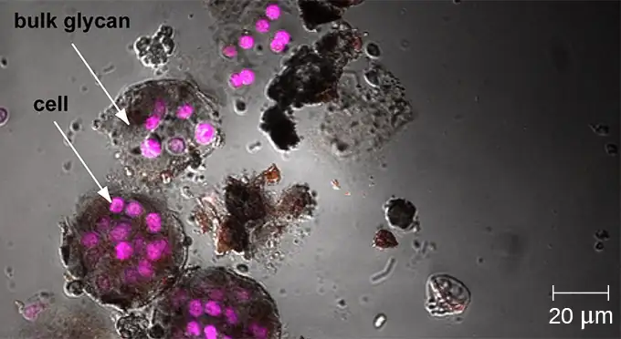
Link to Learning
Explore a rotating three-dimensional view of a biofilm as observed under a confocal microscope. After navigating to the webpage, click the “play” button to launch the video.
Two-Photon Microscopes¶
While the original fluorescent and confocal microscopes allowed better visualization of unique features in specimens, there were still problems that prevented optimum visualization. The effective sensitivity of fluorescence microscopy when viewing thick specimens was generally limited by out-of-focus flare, which resulted in poor resolution. This limitation was greatly reduced in the confocal microscope through the use of a confocal pinhole to reject out-of-focus background fluorescence with thin (<1 μm), unblurred optical sections. However, even the confocal microscopes lacked the resolution needed for viewing thick tissue samples. These problems were resolved with the development of the two-photon microscope, which uses a scanning technique, fluorochromes, and long-wavelength light (such as infrared) to visualize specimens. The low energy associated with the long-wavelength light means that two photons must strike a location at the same time to excite the fluorochrome. The low energy of the excitation light is less damaging to cells, and the long wavelength of the excitation light more easily penetrates deep into thick specimens. This makes the two-photon microscope useful for examining living cells within intact tissues—brain slices, embryos, whole organs, and even entire animals.
Currently, use of two-photon microscopes is limited to advanced clinical and research laboratories because of the high costs of the instruments. A single two-photon microscope typically costs between $300,000 and $500,000, and the lasers used to excite the dyes used on specimens are also very expensive. However, as technology improves, two-photon microscopes may become more readily available in clinical settings.
Check Your Understanding
- What types of specimens are best examined using confocal or two-photon microscopy?
Electron Microscopy¶
The maximum theoretical resolution of images created by light microscopes is ultimately limited by the wavelengths of visible light. Most light microscopes can only magnify 1000⨯, and a few can magnify up to 1500⨯, but this does not begin to approach the magnifying power of an electron microscope (EM), which uses short-wavelength electron beams rather than light to increase magnification and resolution.
Electrons, like electromagnetic radiation, can behave as waves, but with wavelengths of 0.005 nm, they can produce much better resolution than visible light. An EM can produce a sharp image that is magnified up to 100,000⨯. Thus, EMs can resolve subcellular structures as well as some molecular structures (e.g., single strands of DNA); however, electron microscopy cannot be used on living material because of the methods needed to prepare the specimens.
There are two basic types of EM: the transmission electron microscope (TEM) and the scanning electron microscope (SEM) (Figure 2.21). The TEM is somewhat analogous to the brightfield light microscope in terms of the way it functions. However, it uses an electron beam from above the specimen that is focused using a magnetic lens (rather than a glass lens) and projected through the specimen onto a detector. Electrons pass through the specimen, and then the detector captures the image (Figure 2.22).
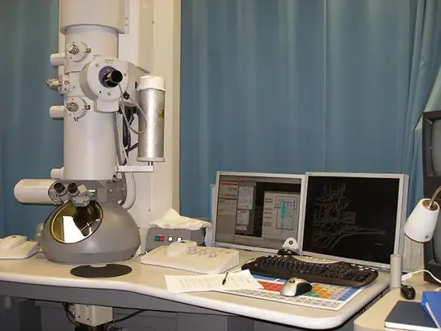
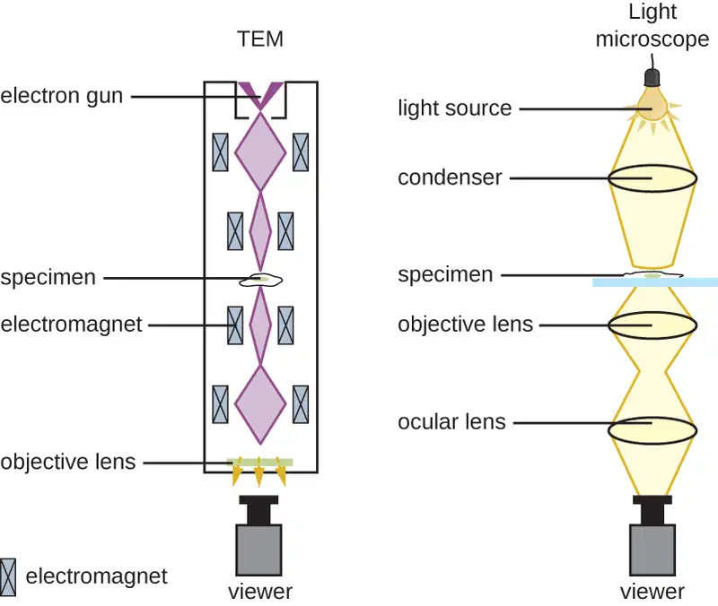
For electrons to pass through the specimen in a TEM, the specimen must be extremely thin (20–100 nm thick). The image is produced because of varying opacity in various parts of the specimen. This opacity can be enhanced by staining the specimen with materials such as heavy metals, which are electron dense. TEM requires that the beam and specimen be in a vacuum and that the specimen be very thin and dehydrated. The specific steps needed to prepare a specimen for observation under an EM are discussed in detail in the next section.
SEMs form images of surfaces of specimens, usually from electrons that are knocked off of specimens by a beam of electrons. This can create highly detailed images with a three-dimensional appearance that are displayed on a monitor (Figure 2.23). Typically, specimens are dried and prepared with fixatives that reduce artifacts, such as shriveling, that can be produced by drying, before being sputter-coated with a thin layer of metal such as gold. Whereas transmission electron microscopy requires very thin sections and allows one to see internal structures such as organelles and the interior of membranes, scanning electron microscopy can be used to view the surfaces of larger objects (such as a pollen grain) as well as the surfaces of very small samples (Figure 2.24). Some EMs can magnify an image up to 2,000,000⨯.1
To expand both the resolution and the types of materials that could be examined, Pratibha L. Gai and Edward D. Boyes invented the environmental transmission electron microscope (ETEM). The device advanced the standard electron microscope by incorporating a gas-filled chamber in which a wider array of substances could be contained. Thus researchers could observe actual reactions taking place at incredible magnifications. Gai later improved on her work by creating the environmental scanning transmission electron microscope (ESTEM), which has even greater resolving power. Gai herself was the first person to ever see individual atoms interacting.
![The TEM diagram show a high voltage wire attached to an electron gun which releases a beam of electrons. The electron beam passes by the first condenser lens (connected to a condenser aperture), then the second condenser lens (also connected to a condenser aperture), and then through the specimen on the specimen holder and air lock (which is also connected to an objective lens and aperture). Finally, the electron beam travels to the fluorescent screen and camera. The SEM begins with an electron gun that fires electron beams through an anode, through a condenser lens, through scanning coils and on to the sample on the stage. A backscatter electron detector detects electrons that travel directly back from the sample; secondary electron detectors detect electrons that travel to the sides.](img/osc-microbio-02-03-elmicschem.webp)
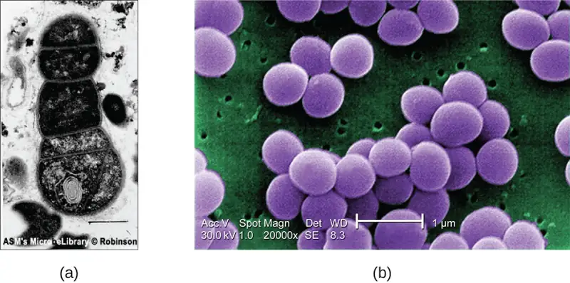
Check Your Understanding
- What are some advantages and disadvantages of electron microscopy, as opposed to light microscopy, for examining microbiological specimens?
- What kinds of specimens are best examined using TEM? SEM?
Micro Connections: Using Microscopy to Study Biofilms
A biofilm is a complex community of one or more microorganism species, typically forming as a slimy coating attached to a surface because of the production of an extrapolymeric substance (EPS) that attaches to a surface or at the interface between surfaces (e.g., between air and water). In nature, biofilms are abundant and frequently occupy complex niches within ecosystems (Figure 2.25). In medicine, biofilms can coat medical devices and exist within the body. Because they possess unique characteristics, such as increased resistance against the immune system and to antimicrobial drugs, biofilms are of particular interest to microbiologists and clinicians alike.
Because biofilms are thick, they cannot be observed very well using light microscopy; slicing a biofilm to create a thinner specimen might kill or disturb the microbial community. Confocal microscopy provides clearer images of biofilms because it can focus on one z-plane at a time and produce a three-dimensional image of a thick specimen. Fluorescent dyes can be helpful in identifying cells within the matrix. Additionally, techniques such as immunofluorescence and fluorescence in situ hybridization (FISH), in which fluorescent probes are used to bind to DNA, can be used.
Electron microscopy can be used to observe biofilms, but only after dehydrating the specimen, which produces undesirable artifacts and distorts the specimen. In addition to these approaches, it is possible to follow water currents through the shapes (such as cones and mushrooms) of biofilms, using video of the movement of fluorescently coated beads (Figure 2.26).
![The stages of a biofilm are shown. In stage 1 (initial attachment), a few flagellated cells attach to a surface. In stage 2 (irreversible attachment) clumps of cells are found on the surface. In stage 3 (maturation) the clumps have enlarged. In stage 4 (maturation 2) the clumps have fused and enlarged greatly. In stage 5 (dispersal) the large clump releases flagellated cells away from the surface. These stages are also shown in micrographs: 1) small dots, 2) larger clumps, 3)larger clump, 4) a large mass, 5) a large mass with an opening at the top.](img/osc-microbio-02-03-biofilms.webp)
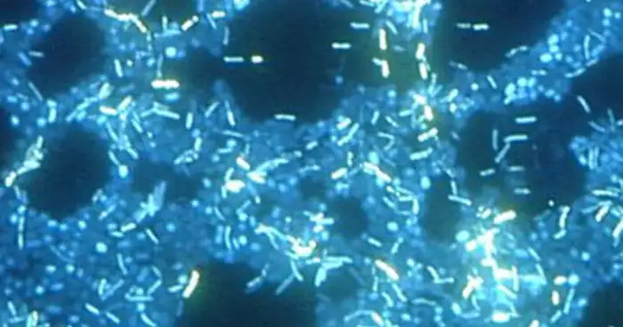
Scanning Probe Microscopy¶
A scanning probe microscope does not use light or electrons, but rather very sharp probes that are passed over the surface of the specimen and interact with it directly. This produces information that can be assembled into images with magnifications up to 100,000,000⨯. Such large magnifications can be used to observe individual atoms on surfaces. To date, these techniques have been used primarily for research rather than for diagnostics.
There are two types of scanning probe microscope: the scanning tunneling microscope (STM) and the atomic force microscope (AFM). An STM uses a probe that is passed just above the specimen as a constant voltage bias creates the potential for an electric current between the probe and the specimen. This current occurs via quantum tunneling of electrons between the probe and the specimen, and the intensity of the current is dependent upon the distance between the probe and the specimen. The probe is moved horizontally above the surface and the intensity of the current is measured. Scanning tunneling microscopy can effectively map the structure of surfaces at a resolution at which individual atoms can be detected.
Similar to an STM, AFMs have a thin probe that is passed just above the specimen. However, rather than measuring variations in the current at a constant height above the specimen, an AFM establishes a constant current and measures variations in the height of the probe tip as it passes over the specimen. As the probe tip is passed over the specimen, forces between the atoms (van der Waals forces, capillary forces, chemical bonding, electrostatic forces, and others) cause it to move up and down. Deflection of the probe tip is determined and measured using Hooke’s law of elasticity, and this information is used to construct images of the surface of the specimen with resolution at the atomic level (Figure 2.27).
Figure 2.28, Figure 2.29, and Figure 2.30 summarize the microscopy techniques for light microscopes, electron microscopes, and scanning probe microscopes, respectively.
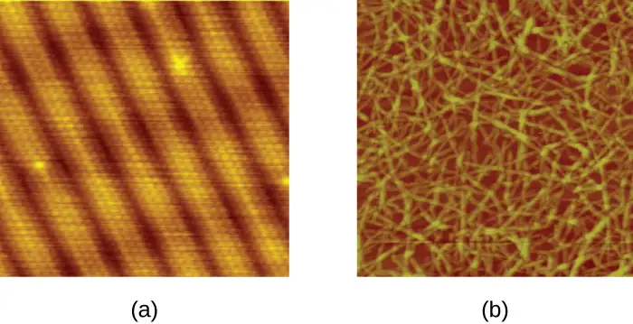
Check Your Understanding
- Which has higher magnification, a light microscope or a scanning probe microscope?
- Name one advantage and one limitation of scanning probe microscopy.
![A table of light microscope types. These use visible or ultraviolet light to produce an image. Magnification: up to about 1000x. Brightfield microscopes are commonly used in a wide variety of laboratory applications as the standard microscope and produce an image on a bright background. The sample image of Bacillus sp. shows red rods on a clear background; small green dots in the red cells indicate endospores. Darkfield microscopes increase contrast without staining by producing a bright image on a dark background. These are especially useful for viewing live specimens. The sample image (Borrelia burgdorferi) shows bright spirals on a dark background. Phase contrast microscopes use refraction and interference caused by structures in the specimen to create high-contrast, high-resolution images without staining, making it useful for viewing live specimens and structures such as endospores and organelles. The sample image (Pseudomonas sp.) shows dark rods with a bright halo. Differential interference contrast (DIC) uses interference patters to enhance contrast between different features of a specimen to produce high-contrast images of living organisms with a three-dimensional appearance, making it especially useful in distinguishing structures within live, unstained specimens. Images viewed reveal detailed structures within cells. The sample image (Escherichia coli 0157:H7) shows small three-dimensional ovals. Fluorescence uses fluorescent stains to produce an image. Fluorescent microscopes can be used to identify pathogens, to find particular species, to distinguish living from dead, or to find location of particular molecules within a cell; also used for immunofluorescence. The sample image (Pseuodomonas putida stained with fluorescent dyes to visualize capsule) shows a green rod on a black background. Confocal microscopes use a laser to scan multiple z-planes successively, producing numerous two-dimensional, high-resolution images at various depths that can be constructed into a three-dimensional image by a computer, making this useful for examining thick specimens such as biofilms. The sample image (mouse intestine cells stained with fluorescent dye) shows cells of various colors on a dark background.](img/osc-microbio-02-03-lightmictb.webp)
![Table of electron microscopes which use electron beams focused with magnets to produce an image. Magnification: 20–100,000 x or more. Transmission electron microscopes (TEM) use electron means that pass through a specimen to visual small images; useful to observe small, thin specimens such as tissue sections and subcellular structures. The sample image (Ebola virus) shows a tube shaped into a letter d at one end. Scanning electron microscopes (SEM) use electron beams to visualize surfaces; useful to observe the three-dimensional surface details of specimens. The sample image (Campylobactor jejuni) shows thick three-dimensional spirals.](img/osc-microbio-02-03-elecmictb-c3a9.webp)
![A table of scanning probe microscopes with very sharp probes that are passed over the surface of the specimen and interact with it directly. Magnification: 100–100,000,000x or more. A scanning tunneling microscope (STM) uses a probe passed horizontally at a constant distance just above the specimen while the intensity of the current is measured; can map the structure of surfaces at the atomic level; works best on conducting materials but can also be used to examine organic materials such as DNA if fixed on a surface. The sample image (of a gold surface) shows small circles in repeating rows. Atomic force microscopes (AFM) are used in several ways, including using a laser focused on a cantilever to measure the bending of the tip or a probe passed above the specimen while the height needs to maintain a constant current is measured; useful to observe specimens at the atomic level and can be more easily used with nonconducting samples. The sample image (carboxymethylated nanocellulse absorbed on a silica surface) shows long strands throughout.](img/osc-microbio-02-03-scanmictb.webp)
2.4 Staining Microscopic Specimens¶
Learning Objectives
By the end of this section, you will be able to:
- Differentiate between simple and differential stains
- Describe the unique features of commonly used stains
- Explain the procedures and name clinical applications for Gram, endospore, acid-fast, negative capsule, and flagella staining
In their natural state, most of the cells and microorganisms that we observe under the microscope lack color and contrast. This makes it difficult, if not impossible, to detect important cellular structures and their distinguishing characteristics without artificially treating specimens. We have already alluded to certain techniques involving stains and fluorescent dyes, and in this section we will discuss specific techniques for sample preparation in greater detail. Indeed, numerous methods have been developed to identify specific microbes, cellular structures, DNA sequences, or indicators of infection in tissue samples, under the microscope. Here, we will focus on the most clinically relevant techniques.
Preparing Specimens for Light Microscopy¶
In clinical settings, light microscopes are the most commonly used microscopes. There are two basic types of preparation used to view specimens with a light microscope: wet mounts and fixed specimens.
The simplest type of preparation is the wet mount, in which the specimen is placed on the slide in a drop of liquid. Some specimens, such as a drop of urine, are already in a liquid form and can be deposited on the slide using a dropper. Solid specimens, such as a skin scraping, can be placed on the slide before adding a drop of liquid to prepare the wet mount. Sometimes the liquid used is simply water, but often stains are added to enhance contrast. Once the liquid has been added to the slide, a coverslip is placed on top and the specimen is ready for examination under the microscope.
The second method of preparing specimens for light microscopy is fixation. The “fixing” of a sample refers to the process of attaching cells to a slide. Fixation is often achieved either by heating (heat fixing) or chemically treating the specimen. In addition to attaching the specimen to the slide, fixation also kills microorganisms in the specimen, stopping their movement and metabolism while preserving the integrity of their cellular components for observation.
To heat-fix a sample, a thin layer of the specimen is spread on the slide (called a smear), and the slide is then briefly heated over a heat source (Figure 2.31). Chemical fixatives are often preferable to heat for tissue specimens. Chemical agents such as acetic acid, ethanol, methanol, formaldehyde (formalin), and glutaraldehyde can denature proteins, stop biochemical reactions, and stabilize cell structures in tissue samples (Figure 2.31).
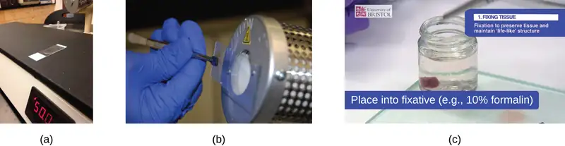
In addition to fixation, staining is almost always applied to color certain features of a specimen before examining it under a light microscope. Stains, or dyes, contain salts made up of a positive ion and a negative ion. Depending on the type of dye, the positive or the negative ion may be the chromophore (the colored ion); the other, uncolored ion is called the counterion. If the chromophore is the positively charged ion, the stain is classified as a basic dye; if the negative ion is the chromophore, the stain is considered an acidic dye.
Dyes are selected for staining based on the chemical properties of the dye and the specimen being observed, which determine how the dye will interact with the specimen. In most cases, it is preferable to use a positive stain, a dye that will be absorbed by the cells or organisms being observed, adding color to objects of interest to make them stand out against the background. However, there are scenarios in which it is advantageous to use a negative stain, which is absorbed by the background but not by the cells or organisms in the specimen. Negative staining produces an outline or silhouette of the organisms against a colorful background (Figure 2.32).
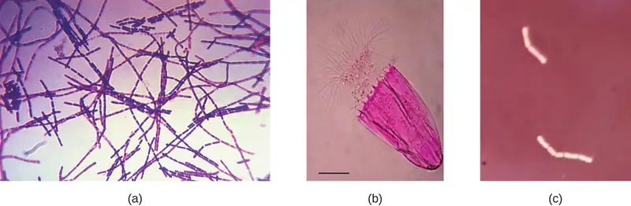
Because cells typically have negatively charged cell walls, the positive chromophores in basic dyes tend to stick to the cell walls, making them positive stains. Thus, commonly used basic dyes such as basic fuchsin, crystal violet, malachite green, methylene blue, and safranin typically serve as positive stains. On the other hand, the negatively charged chromophores in acidic dyes are repelled by negatively charged cell walls, making them negative stains. Commonly used acidic dyes include acid fuchsin, eosin, and rose bengal. Figure 2.40 provides more detail.
Some staining techniques involve the application of only one dye to the sample; others require more than one dye. In simple staining, a single dye is used to emphasize particular structures in the specimen. A simple stain will generally make all of the organisms in a sample appear to be the same color, even if the sample contains more than one type of organism. In contrast, differential staining distinguishes organisms based on their interactions with multiple stains. In other words, two organisms in a differentially stained sample may appear to be different colors. Differential staining techniques commonly used in clinical settings include Gram staining, acid-fast staining, endospore staining, flagella staining, and capsule staining. Figure 2.41 provides more detail on these differential staining techniques.
Check Your Understanding
- Explain why it is important to fix a specimen before viewing it under a light microscope.
- What types of specimens should be chemically fixed as opposed to heat-fixed?
- Why might an acidic dye react differently with a given specimen than a basic dye?
- Explain the difference between a positive stain and a negative stain.
- Explain the difference between simple and differential staining.
Gram Staining¶
The Gram stain procedure is a differential staining procedure that involves multiple steps. It was developed by Danish microbiologist Hans Christian Gram in 1884 as an effective method to distinguish between bacteria with different types of cell walls, and even today it remains one of the most frequently used staining techniques. The steps of the Gram stain procedure are listed below and illustrated in Figure 2.33.
- First, crystal violet, a primary stain, is applied to a heat-fixed smear, giving all of the cells a purple color.
- Next, Gram’s iodine, a mordant, is added. A mordant is a substance used to set or stabilize stains or dyes; in this case, Gram’s iodine acts like a trapping agent that complexes with the crystal violet, making the crystal violet–iodine complex clump and stay contained in thick layers of peptidoglycan in the cell walls.
- Next, a decolorizing agent is added, usually ethanol or an acetone/ethanol solution. Cells that have thick peptidoglycan layers in their cell walls are much less affected by the decolorizing agent; they generally retain the crystal violet dye and remain purple. However, the decolorizing agent more easily washes the dye out of cells with thinner peptidoglycan layers, making them again colorless.
- Finally, a secondary counterstain, usually safranin, is added. This stains the decolorized cells pink and is less noticeable in the cells that still contain the crystal violet dye.
![A table shows the Gram stain process. Each row consists of a column describing the step and a column describing the effect. Additional columns show drawings to support the description in the effects column. Step 1: Crystal Violet, the primary stain, is added to the specimen smear. This stains cells purple or blue. The Gram-positive and Gram-negative cells all look purple. Step 2: Iodine, the mordant, makes the dye less soluble so it adheres to cell walls. The cells remain purple or blue. The Gram-positive and Gram-negative cells all look purple. Step 3: Alcohol, the decolorizer, washes away stain from Gram-negative cell walls. Gram-positive cells remain purple or blue, Gram-negative cells are colorless. Step 4: Safranin, the counterstain, allows dye adherence to Gram-negative cells. Gram-positive cells remain a pruple or blue. Gram-negative cells appear pink or red.](img/osc-microbio-02-04-gramproc.webp)
The purple, crystal-violet stained cells are referred to as gram-positive cells, while the red, safranin-dyed cells are gram-negative (Figure 2.34). However, there are several important considerations in interpreting the results of a Gram stain. First, older bacterial cells may have damage to their cell walls that causes them to appear gram-negative even if the species is gram-positive. Thus, it is best to use fresh bacterial cultures for Gram staining. Second, errors such as leaving the decolorizer on for too long can affect the results. For example, if the decolorizer is left on a slide of pure gram-positive bacterial cells for too long, some of the gram-positive cells will be decolorized and stained red with safranin, suggesting a mixed culture. Therefore, if a mixed culture of gram-positive and gram-negative cells is evaluated with the Gram stain and the decolorizer is left on too long, it will be difficult to accurately interpret the results.
Besides their differing interactions with dyes and decolorizing agents, the chemical differences between gram-positive and gram-negative cells have other implications with clinical relevance. For example, Gram staining can help clinicians classify bacterial pathogens in a sample into categories associated with specific properties. Gram-negative bacteria tend to be more resistant to certain antibiotics than gram-positive bacteria. We will discuss this and other applications of Gram staining in more detail in later chapters.
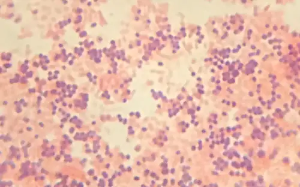
Check Your Understanding
- Explain the role of Gram’s iodine in the Gram stain procedure.
- Explain the role of alcohol in the Gram stain procedure.
- What color are gram-positive and gram-negative cells, respectively, after the Gram stain procedure?
Clinical Focus: Part 3
Viewing Cindy’s specimen under the darkfield microscope has provided the technician with some important clues about the identity of the microbe causing her infection. However, more information is needed to make a conclusive diagnosis. The technician decides to make a Gram stain of the specimen. This technique is commonly used as an early step in identifying pathogenic bacteria. After completing the Gram stain procedure, the technician views the slide under the brightfield microscope and sees purple, grape-like clusters of spherical cells (Figure 2.35).
- Are these bacteria gram-positive or gram-negative?
- What does this reveal about their cell walls?
Jump to the next Clinical Focus box. Go back to the previous Clinical Focus box.
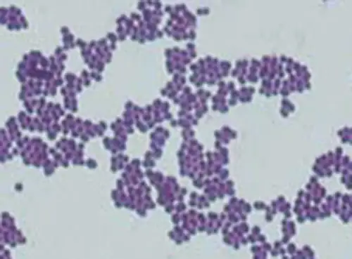
Acid-Fast Stains¶
Acid-fast staining is another commonly used, differential staining technique that can be an important diagnostic tool. An acid-fast stain is able to differentiate two types of gram-positive cells: those that have waxy mycolic acids in their cell walls, and those that do not. Two different methods for acid-fast staining are the Ziehl-Neelsen technique and the Kinyoun technique. Both use carbolfuchsin as the primary stain. The waxy, acid-fast cells retain the carbolfuchsin even after a decolorizing agent (an acid-alcohol solution) is applied. A secondary counterstain, methylene blue, is then applied, which renders non–acid-fast cells blue.
The fundamental difference between the two carbolfuchsin-based methods is whether heat is used during the primary staining process. The Ziehl-Neelsen method uses heat to infuse the carbolfuchsin into the acid-fast cells, whereas the Kinyoun method does not use heat. Both techniques are important diagnostic tools because a number of specific diseases are caused by acid-fast bacteria (AFB). If AFB are present in a tissue sample, their red or pink color can be seen clearly against the blue background of the surrounding tissue cells (Figure 2.36).
Check Your Understanding
- Why are acid-fast stains useful?
Micro Connections: Using Microscopy to Diagnose Tuberculosis
Mycobacterium tuberculosis, the bacterium that causes tuberculosis, can be detected in specimens based on the presence of acid-fast bacilli. Tuberculosis infected immense portions of the global population throughout the 19th and 20th centuries, and much of the work of early microbiologists and other researchers was focused on the disease. Ruth Ella Moore, a prominent researcher who is known for work on blood typing, dental cavities, and gut microbiome, as well as for being the first Black woman to earn a natural science Ph.D., wrote her dissertation on new methods of isolating M. tuberculosis in order to better study it and develop a cure. These isolates would be critical in diagnosis and other medical procedures as well.
Often, a smear is prepared from a sample of the patient’s sputum and then stained using the Ziehl-Neelsen technique (Figure 2.36). If acid-fast bacteria are confirmed, they are generally cultured to make a positive identification. Variations of this approach can be used as a first step in determining whether M. tuberculosis or other acid-fast bacteria are present, though samples from elsewhere in the body (such as urine) may contain other Mycobacterium species.
An alternative approach for determining the presence of M. tuberculosis is immunofluorescence. In this technique, fluorochrome-labeled antibodies bind to M. tuberculosis, if present. Antibody-specific fluorescent dyes can be used to view the mycobacteria with a fluorescence microscope.
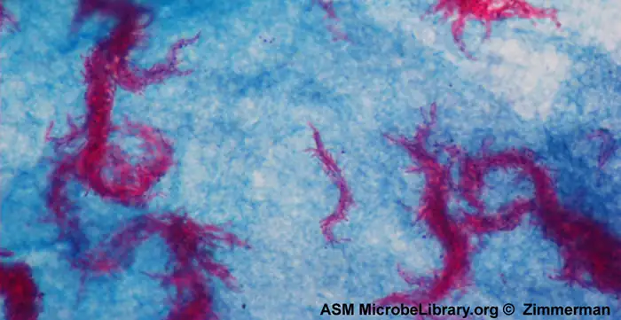
Capsule Staining¶
Certain bacteria and yeasts have a protective outer structure called a capsule. Since the presence of a capsule is directly related to a microbe’s virulence (its ability to cause disease), the ability to determine whether cells in a sample have capsules is an important diagnostic tool. Capsules do not absorb most basic dyes; therefore, a negative staining technique (staining around the cells) is typically used for capsule staining. The dye stains the background but does not penetrate the capsules, which appear like halos around the borders of the cell. The specimen does not need to be heat-fixed prior to negative staining.
One common negative staining technique for identifying encapsulated yeast and bacteria is to add a few drops of India ink or nigrosin to a specimen. Other capsular stains can also be used to negatively stain encapsulated cells (Figure 2.37). Alternatively, positive and negative staining techniques can be combined to visualize capsules: The positive stain colors the body of the cell, and the negative stain colors the background but not the capsule, leaving halo around each cell.
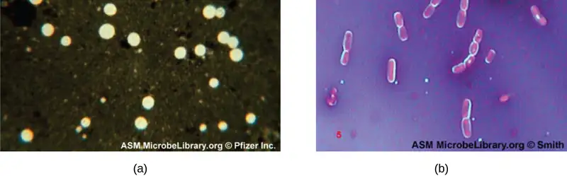
Check Your Understanding
- How does negative staining help us visualize capsules?
Endospore Staining¶
Endospores are structures produced within certain bacterial cells that allow them to survive harsh conditions. Gram staining alone cannot be used to visualize endospores, which appear clear when Gram-stained cells are viewed. Endospore staining uses two stains to differentiate endospores from the rest of the cell. The Schaeffer-Fulton method (the most commonly used endospore-staining technique) uses heat to push the primary stain (malachite green) into the endospore. Washing with water decolorizes the cell, but the endospore retains the green stain. The cell is then counterstained pink with safranin. The resulting image reveals the shape and location of endospores, if they are present. The green endospores will appear either within the pink vegetative cells or as separate from the pink cells altogether. If no endospores are present, then only the pink vegetative cells will be visible (Figure 2.38).
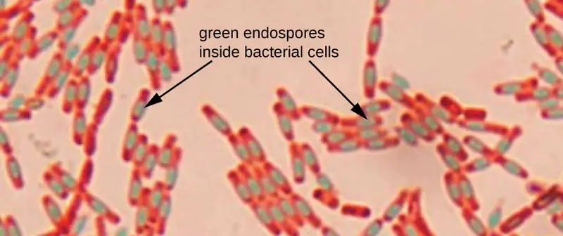
Endospore-staining techniques are important for identifying Bacillus, Clostridium, and Clostridioides, three genera of endospore-producing bacteria that contain clinically significant species. Among others, B. anthracis (which causes anthrax) has been of particular interest because of concern that its spores could be used as a bioterrorism agent. Clostridioides difficile is a particularly important species responsible for the typically hospital-acquired infection known as “C. diff.”
Check Your Understanding
- Is endospore staining an example of positive, negative, or differential staining?
Flagella Staining¶
Flagella (singular: flagellum) are tail-like cellular structures used for locomotion by some bacteria, archaea, and eukaryotes. Because they are so thin, flagella typically cannot be seen under a light microscope without a specialized flagella staining technique. Flagella staining thickens the flagella by first applying mordant (generally tannic acid, but sometimes potassium alum), which coats the flagella; then the specimen is stained with pararosaniline (most commonly) or basic fuchsin (Figure 2.39).
Though flagella staining is uncommon in clinical settings, the technique is commonly used by microbiologists, since the location and number of flagella can be useful in classifying and identifying bacteria in a sample. When using this technique, it is important to handle the specimen with great care; flagella are delicate structures that can easily be damaged or pulled off, compromising attempts to accurately locate and count the number of flagella.
![A table of simple stains is shown. Basic stains include: methylene blue, crystal violet, malachite green, basic fuschsin, carbolfuschsin, and safranin. Basic stains stain negatively charged molecules and structures, such as nucleic acids and proteins. The outcome of this positive stain is dark cells on a light background. Acidic stains include eosine, acid fuchsin, rose Bengal, and Congo red. Acid stains stain positively charged molecules and structures such as proteins. Acidic stains can either be positive or negative stains depending on the cell’s chemistry. Negative stains include india in k and nigrosine. Negative stains stain the background, not the specimen and produce a dark background with a light specimen.](img/osc-microbio-02-04-staintabla.webp)
![A table of differential stains is shown. The Gram stain uses crystal violet, Gram’s iodine, ethanol (decolorizer), and safranin. The purpose of the Gram stain is to distinguish cells by cell-wall type (Gram-positive, Gram-negative). Gram-positive cells stain purple/violet. Gram-negative cells stain pink. The acid fast stain: after staining with basic fuchsin, acid-fast bacteria resist decolonization by acid-alcohol. Non-acid-fast bacteria are counterstained with methylene blue. The acid-fast stain is used to distinguish acid-fast bacteria such as M. tuberculosis, from non-acid-fast cells. Acid-fast bacteria are red; non-acid-fast cells are blue. The Endospore stain uses heat to stain endospores with malachite green (Schaeffer-Fulton procedure), then cell is washed and counterstained with safranin. The endospore stain is used to distinguish organisms with endospores from those without; used to study the endospore. Endospores appear bluish-green; other structures appear pink to red. Flagella stain: flagella are coated with a tannic acid or potassium alum mordant, then stained using either pararosaline or basic fuchsin. The flagella stain is used to view and study flagella in bacteria that have them. Flagella are visible as thin strands if present. Capsule stain: negative staining with india ink or nigrosine is used to stain the background, leaving a clear area of the cell and the capsule Counterstaining can be used to stain the cell while leaving the capsule clear. The capsule stain is used to distinguish cells with capsules from those without. Capsules appear clear or as halos if present.](img/osc-microbio-02-04-staintablb.webp)
Preparing Specimens for Electron Microscopy¶
Samples to be analyzed using a TEM must have very thin sections. But cells are too soft to cut thinly, even with diamond knives. To cut cells without damage, the cells must be embedded in plastic resin and then dehydrated through a series of soaks in ethanol solutions (50%, 60%, 70%, and so on). The ethanol replaces the water in the cells, and the resin dissolves in ethanol and enters the cell, where it solidifies. Next, thin sections are cut using a specialized device called an ultramicrotome (Figure 2.42). Finally, samples are fixed to fine copper wire or carbon-fiber grids and stained—not with colored dyes, but with substances like uranyl acetate or osmium tetroxide, which contain electron-dense heavy metal atoms.
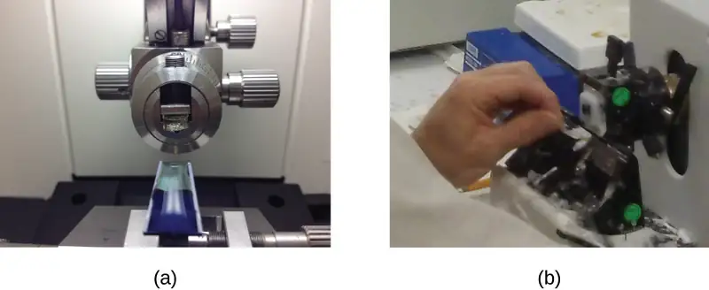
When samples are prepared for viewing using an SEM, they must also be dehydrated using an ethanol series. However, they must be even drier than is necessary for a TEM. Critical point drying with inert liquid carbon dioxide under pressure is used to displace the water from the specimen. After drying, the specimens are sputter-coated with metal by knocking atoms off of a palladium target, with energetic particles. Sputter-coating prevents specimens from becoming charged by the SEM’s electron beam.
Check Your Understanding
- Why is it important to dehydrate cells before examining them under an electron microscope?
- Name the device that is used to create thin sections of specimens for electron microscopy.
Micro Connections: Using Microscopy to Diagnose Syphilis
The causative agent of syphilis is Treponema pallidum, a flexible, spiral cell (spirochete) that can be very thin (<0.15 μm) and match the refractive index of the medium, making it difficult to view using brightfield microscopy. Additionally, this species has not been successfully cultured in the laboratory on an artificial medium; therefore, diagnosis depends upon successful identification using microscopic techniques and serology (analysis of body fluids, often looking for antibodies to a pathogen). Since fixation and staining would kill the cells, darkfield microscopy is typically used for observing live specimens and viewing their movements. However, other approaches can also be used. For example, the cells can be thickened with silver particles (in tissue sections) and observed using a light microscope. It is also possible to use fluorescence or electron microscopy to view Treponema (Figure 2.43).
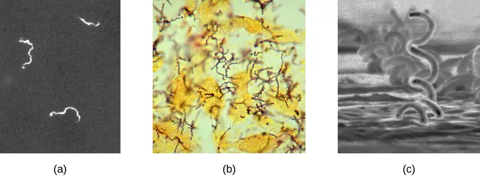
In clinical settings, indirect immunofluorescence is often used to identify Treponema. A primary, unstained antibody attaches directly to the pathogen surface, and secondary antibodies “tagged” with a fluorescent stain attach to the primary antibody. Multiple secondary antibodies can attach to each primary antibody, amplifying the amount of stain attached to each Treponema cell, making them easier to spot (Figure 2.44).
Preparation and Staining for Other Microscopes¶
Samples for fluorescence and confocal microscopy are prepared similarly to samples for light microscopy, except that the dyes are fluorochromes. Stains are often diluted in liquid before applying to the slide. Some dyes attach to an antibody to stain specific proteins on specific types of cells (immunofluorescence); others may attach to DNA molecules in a process called fluorescence in situ hybridization (FISH), causing cells to be stained based on whether they have a specific DNA sequence.
Sample preparation for two-photon microscopy is similar to fluorescence microscopy, except for the use of infrared dyes. Specimens for STM need to be on a very clean and atomically smooth surface. They are often mica coated with Au(111). Toluene vapor is a common fixative.
Check Your Understanding
- What is the main difference between preparing a sample for fluorescence microscopy versus light microscopy?
Link to Learning
Cornell University’s and St. Joseph's University’s Case Studies in Microscopy Case Studies in Microscopy offers a series of clinical problems based on real-life events. Each case study walks you through a clinical problem using appropriate techniques in microscopy at each step.
Clinical Focus: Resolution
From the results of the Gram stain, the technician now knows that Cindy’s infection is caused by spherical, gram-positive bacteria that form grape-like clusters, which is typical of staphylococcal bacteria. After some additional testing, the technician determines that these bacteria are the medically important species known as Staphylococcus aureus, a common culprit in wound infections. Because some strains of S. aureus are resistant to many antibiotics, skin infections may spread to other areas of the body and become serious, sometimes even resulting in amputations or death if the correct antibiotics are not used.
After testing several antibiotics, the lab is able to identify one that is effective against this particular strain of S. aureus. Cindy’s doctor quickly prescribes the medication and emphasizes the importance of taking the entire course of antibiotics, even if the infection appears to clear up before the last scheduled dose. This reduces the risk that any especially resistant bacteria could survive, causing a second infection or spreading to another person.
Go back to the previous Clinical Focus box.
Eye on Ethics: Microscopy and Antibiotic Resistance
As the use of antibiotics has proliferated in medicine, as well as agriculture, microbes have evolved to become more resistant. Strains of bacteria such as methicillin-resistant S. aureus (MRSA), which has developed a high level of resistance to many antibiotics, are an increasingly worrying problem, so much so that research is underway to develop new and more diversified antibiotics.
Fluorescence microscopy can be useful in testing the effectiveness of new antibiotics against resistant strains like MRSA. In a test of one new antibiotic derived from a marine bacterium, MC21-A (bromophene), researchers used the fluorescent dye SYTOX Green to stain samples of MRSA. SYTOX Green is often used to distinguish dead cells from living cells, with fluorescence microscopy. Live cells will not absorb the dye, but cells killed by an antibiotic will absorb the dye, since the antibiotic has damaged the bacterial cell membrane. In this particular case, MRSA bacteria that had been exposed to MC21-A did, indeed, appear green under the fluorescence microscope, leading researchers to conclude that it is an effective antibiotic against MRSA.
Of course, some argue that developing new antibiotics will only lead to even more antibiotic-resistant microbes, so-called superbugs that could spawn epidemics before new treatments can be developed. For this reason, many health professionals are beginning to exercise more discretion in prescribing antibiotics. Whereas antibiotics were once routinely prescribed for common illnesses without a definite diagnosis, doctors and hospitals are much more likely to conduct additional testing to determine whether an antibiotic is necessary and appropriate before prescribing.
A sick patient might reasonably object to this stingy approach to prescribing antibiotics. To the patient who simply wants to feel better as quickly as possible, the potential benefits of taking an antibiotic may seem to outweigh any immediate health risks that might occur if the antibiotic is ineffective. But at what point do the risks of widespread antibiotic use supersede the desire to use them in individual cases?
Chapter Review¶
Key Concepts and Summary¶
2.1 The Properties of Light¶
- Light waves interacting with materials may be reflected, absorbed, or transmitted, depending on the properties of the material.
- Light waves can interact with each other (interference) or be distorted by interactions with small objects or openings (diffraction).
- Refraction occurs when light waves change speed and direction as they pass from one medium to another. Differences in the refraction indices of two materials determine the magnitude of directional changes when light passes from one to the other.
- A lens is a medium with a curved surface that refracts and focuses light to produce an image.
- Visible light is part of the electromagnetic spectrum; light waves of different frequencies and wavelengths are distinguished as colors by the human eye.
- A prism can separate the colors of white light (dispersion) because different frequencies of light have different refractive indices for a given material.
- Fluorescent dyes and phosphorescent materials can effectively transform nonvisible electromagnetic radiation into visible light.
- The power of a microscope can be described in terms of its magnification and resolution.
- Resolution can be increased by shortening wavelength, increasing the numerical aperture of the lens, or using stains that enhance contrast.
2.2 Peering Into the Invisible World¶
- Antonie van Leeuwenhoek is credited with the first observation of microbes, including protists and bacteria, with simple microscopes that he made.
- Robert Hooke was the first to describe what we now call cells.
- Simple microscopes have a single lens, while compound microscopes have multiple lenses.
2.3 Instruments of Microscopy¶
- Numerous types of microscopes use various technologies to generate micrographs. Most are useful for a particular type of specimen or application.
- Light microscopy uses lenses to focus light on a specimen to produce an image. Commonly used light microscopes include brightfield, darkfield, phase-contrast, differential interference contrast, fluorescence, confocal, and two-photon microscopes.
- Electron microscopy focuses electrons on the specimen using magnets, producing much greater magnification than light microscopy. The transmission electron microscope (TEM) and scanning electron microscope (SEM) are two common forms.
- Scanning probe microscopy produces images of even greater magnification by measuring feedback from sharp probes that interact with the specimen. Probe microscopes include the scanning tunneling microscope (STM) and the atomic force microscope (AFM).
2.4 Staining Microscopic Specimens¶
- Samples must be properly prepared for microscopy. This may involve staining, fixation, and/or cutting thin sections.
- A variety of staining techniques can be used with light microscopy, including Gram staining, acid-fast staining, capsule staining, endospore staining, and flagella staining.
- Samples for TEM require very thin sections, whereas samples for SEM require sputter-coating.
- Preparation for fluorescence microscopy is similar to that for light microscopy, except that fluorochromes are used.
Multiple Choice¶
2.1 The Properties of Light¶
1. Which of the following has the highest energy?
- light with a long wavelength
- light with an intermediate wavelength
- light with a short wavelength
- It is impossible to tell from the information given.
Answer
C
2. You place a specimen under the microscope and notice that parts of the specimen begin to emit light immediately. These materials can be described as _____________.
- fluorescent
- phosphorescent
- transparent
- opaque
Answer
A
2.2 Peering Into the Invisible World¶
3. Who was the first to describe “cells” in dead cork tissue?
- Hans Janssen
- Zaccharias Janssen
- Antonie van Leeuwenhoek
- Robert Hooke
Answer
D
4. Who is the probable inventor of the compound microscope?
- Girolamo Fracastoro
- Zaccharias Janssen
- Antonie van Leeuwenhoek
- Robert Hooke
Answer
B
2.3 Instruments of Microscopy¶
5. Which would be the best choice for viewing internal structures of a living protist such as a Paramecium?
- a brightfield microscope with a stain
- a brightfield microscope without a stain
- a darkfield microscope
- a transmission electron microscope
Answer
C
6. Which type of microscope is especially useful for viewing thick structures such as biofilms?
- a transmission electron microscope
- a scanning electron microscopes
- a phase-contrast microscope
- a confocal scanning laser microscope
- an atomic force microscope
Answer
D
7. Which type of microscope would be the best choice for viewing very small surface structures of a cell?
- a transmission electron microscope
- a scanning electron microscope
- a brightfield microscope
- a darkfield microscope
- a phase-contrast microscope
Answer
B
8. What type of microscope uses an annular stop?
- a transmission electron microscope
- a scanning electron microscope
- a brightfield microscope
- a darkfield microscope
- a phase-contrast microscope
Answer
E
9. What type of microscope uses a cone of light so that light only hits the specimen indirectly, producing a light image on a dark background?
- a transmission electron microscope
- a scanning electron microscope
- a brightfield microscope
- a darkfield microscope
- a phase-contrast microscope
Answer
D
2.4 Staining Microscopic Specimens¶
10. What mordant is used in Gram staining?
- crystal violet
- safranin
- acid-alcohol
- iodine
Answer
D
11. What is one difference between specimen preparation for a transmission electron microscope (TEM) and preparation for a scanning electron microscope (SEM)?
- Only the TEM specimen requires sputter coating.
- Only the SEM specimen requires sputter-coating.
- Only the TEM specimen must be dehydrated.
- Only the SEM specimen must be dehydrated.
Answer
B
Fill in the Blank¶
2.1 The Properties of Light¶
12. When you see light bend as it moves from air into water, you are observing _________.
Answer
refraction
2.2 Peering Into the Invisible World¶
13. A microscope that uses multiple lenses is called a _________ microscope.
Answer
compound
2.3 Instruments of Microscopy¶
14. Chromophores that absorb and then emit light are called __________.
Answer
fluorochromes
15. In a(n) _______ microscope, a probe located just above the specimen moves up and down in response to forces between the atoms and the tip of the probe.
Answer
atomic force microscope
16. What is the total magnification of a specimen that is being viewed with a standard ocular lens and a 40⨯ objective lens?
Answer
400⨯
2.4 Staining Microscopic Specimens¶
17. Ziehl-Neelsen staining, a type of _______ staining, is diagnostic for Mycobacterium tuberculosis.
Answer
acid-fast
18. The _______ is used to differentiate bacterial cells based on the components of their cell walls.
Answer
Gram stain
Short Answer¶
2.1 The Properties of Light¶
19. Explain how a prism separates white light into different colors.
2.2 Peering Into the Invisible World¶
20. Why is Antonie van Leeuwenhoek’s work much better known than that of Zaccharias Janssen?
21. Why did the cork cells observed by Robert Hooke appear to be empty, as opposed to being full of other structures?
2.3 Instruments of Microscopy¶
22. What is the function of the condenser in a brightfield microscope?
23. Art Connection: Label each component of the brightfield microscope.
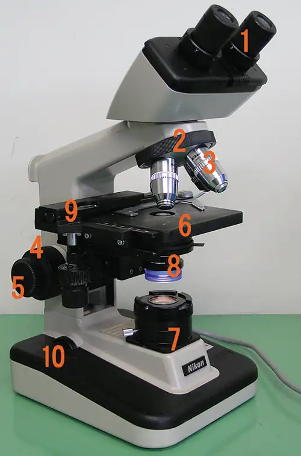
2.4 Staining Microscopic Specimens¶
24. How could you identify whether a particular bacterial sample contained specimens with mycolic acid-rich cell walls?
Critical Thinking¶
2.1 The Properties of Light¶
25. In Figure 2.7, which of the following has the lowest energy?
- visible light
- X-rays
- ultraviolet rays
- infrared rays
2.3 Instruments of Microscopy¶
26. When focusing a light microscope, why is it best to adjust the focus using the coarse focusing knob before using the fine focusing knob?
27. You need to identify structures within a cell using a microscope. However, the image appears very blurry even though you have a high magnification. What are some things that you could try to improve the resolution of the image? Describe the most basic factors that affect resolution when you first put the slide onto the stage; then consider more specific factors that could affect resolution for 40⨯ and 100⨯ lenses.
2.4 Staining Microscopic Specimens¶
28. You use the Gram staining procedure to stain an L-form bacterium (a bacterium that lacks a cell wall). What color will the bacterium be after the staining procedure is finished?
Adapted from Microbiology by OpenStax, licensed under CC BY 4.0. Access the original for free at openstax.org. Changes: converted to the web reading format of The Open Book Project.
-
“JEM-ARM200F Transmission Electron Microscope,” JEOL USA Inc, http://www.jeolusa.com/PRODUCTS/TransmissionElectronMicroscopes%28TEM%29/200kV/JEM-ARM200F/tabid/663/Default.aspx#195028-specifications. Accessed 8/28/2015. ↩